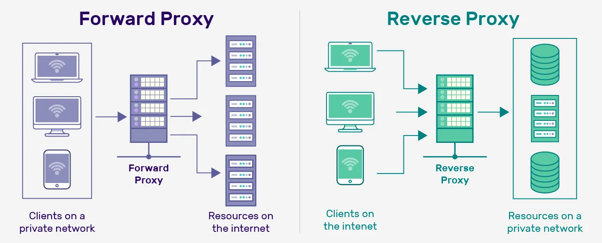
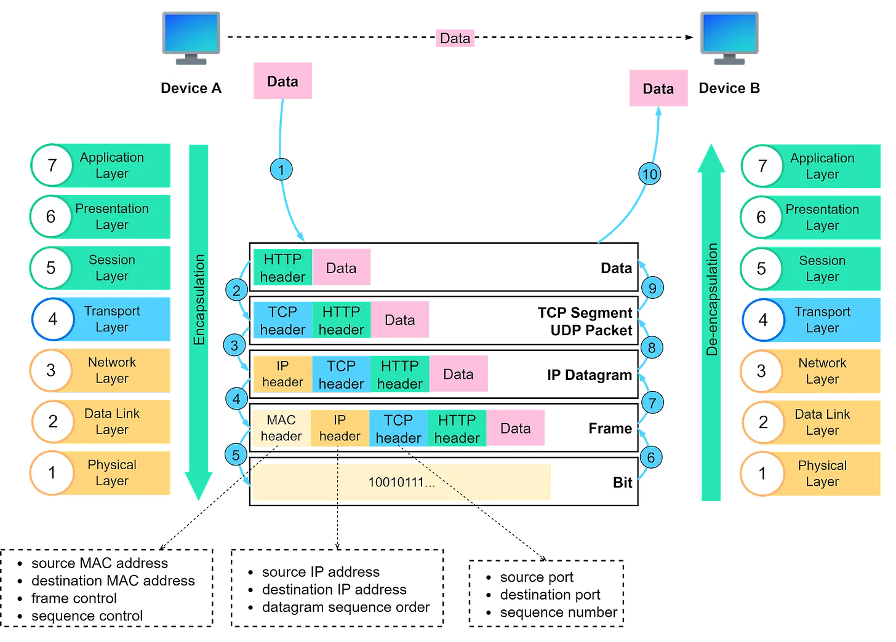
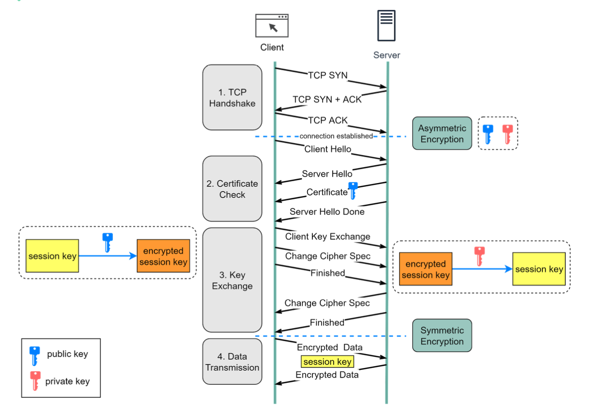

Network
HTTP
HTTP Request Method
| Method | Description |
|---|---|
GET |
Used to request data. |
HEAD |
Requests the headers that would be returned. |
POST |
Send data to the server. |
PUT |
Creates a new resource or replaces target resource with the request payload. |
HTTP Status Code3
| Method | Description |
|---|---|
2xx |
Success Code |
200 OK |
Success |
204 No Content |
The request was successfully processed, but there is no content. The headers may be useful. |
3xx |
Redirection code |
301 Moved Permanently |
Resource yas moved to new URL. |
304 Not Modified |
Used for caching purposes. The response hasn’t been modified. |
4xx |
Client error code |
400 Bad Request |
Server won't process due to client error. |
401 Unauthorized |
The user doesn’t have valid authentication credentials to get the requested resource. |
403 Forbidden |
The client doesn’t have access rights to the content. |
404 Not found |
Cannot find the resource. |
405 Method Not Allowed |
Target resource doesn't support this method. |
429 Too Many Request |
Rate limit error |
5xx |
Server error code |
500 Internal Server Error |
The server has encountered an unexpected error and cannot complete the request. |
502 Bad Gateway |
The server acts as a gateway and gets an invalid response from an inbound host. |
503 Service Unavailable |
The server is unable to process the request. This often occurs when a server is overloaded or down for maintenance. |
504 Gateway Timeout |
he server was acting as a gateway or proxy and timed out, waiting for a response. |
Proxy vs Reversed Proxy

| (Forward) Proxy | Reversed Proxy |
|---|---|
| Sit between user and Internet. Forward request on behalf of user | Sit between Internet and server. Receive request on behalf of server |
| Avoid browsing restriction. Block certain content. Protect user identify online | Load balancing. Protect DDOS attack. Cache static content. Encrpyt and decrypt SSL communication |
Subnet mask calculation
- eg. For
10.0.0.10/20. How many usable hosts? What are the usable range? - Full explanation: Calculating the Range of IP Addresses from Subnet Mask
- IP Subnet Calculator
OSI 7 layers1

- Physical Layer
- Function: Transmits raw bit streams over a physical medium.
- Examples: Cables, switches, hubs, and other hardware elements.
- Data Link Layer
- Function: Provides node-to-node data transfer, error detection and correction, and frame synchronization.
- Examples: Ethernet, PPP (Point-to-Point Protocol), MAC addresses.
- Network Layer
- Function: Manages device addressing, tracks the location of devices on the network, and determines the best way to move data.
- Examples: IP (Internet Protocol), routers.
- Transport Layer
- Function: Ensures complete data transfer, error recovery, and flow control. It segments and reassembles data for communications between end-to-end nodes.
- Examples: TCP (Transmission Control Protocol), UDP (User Datagram Protocol).
- Session Layer
- Function: Manages sessions between applications, establishing, maintaining, and terminating connections.
- Examples: NetBIOS, RPC (Remote Procedure Call).
- Presentation Layer
- Function: Translates, encrypts, and compresses data. It ensures that data is in a usable format and is presented to the application layer correctly.
- Examples: SSL/TLS, JPEG, GIF.
- Application Layer
- Function: Provides network services directly to applications. It interfaces with software applications and provides services such as email, file transfer, and web browsing.
- Examples: HTTP, FTP, SMTP.
- Mnemonics:
Please Do Not Throw Sausage Pizza Away
What happen when a user connect to a e-commerce website?
- User enter website URL.
- Browser resolve DNS domain name to retrieve IP address.
- Browser initialise TCP connection. Establish 3-way handshake.
- Perform SSL/TLS handshake for HTTPS. Have certification verification, key exchange.
- Browser send HTTP GET request to fetch homepage.
- Browser rendering web page. Loading html, javascript, css, images.
- User interact with the web page. Browsing product, cart which may trigger additional HTTPS request to server and restart process.
- If there is require user login and authentication. User enter credential and send via HTTPS POST request.
- Server then validate and establish session for user.
How HTTPS Works?2

TCP vs UDP
| Feature | TCP | UDP |
|---|---|---|
| Connection | Connection-oriented Perform 3-way handshake |
Connectionless |
| Reliability | Reliable Use acknowledgement, retransmission |
Unreliable no acknowledgement |
| Header size | Bigger | Smaller |
| Speed | Slower due overhead | Faster due minimal overhead |
| Use case | Web browsing, email, file transfer | Streaming, gaming, broadcast |
API Security Best Practise
- Use HTTPS
- Authentication, use OAuths
- Rate limit
- API Versioning
- Allowlist
- Check with OWASP API Security Risks
- Use API Gateway
- Error handling. Give descriptive helpful message
- Input validation